Climbing
Climbing Why do you need trekking poles or hiking poles? Won't they get in the way during the expedition and won't it turn out that I have to wear them for nothing all the time? Such questions are asked by those who have not hiked with poles before. And those who have already tried them out on trekking want to know what details to pay attention to before buying the perfect pair. Here we share everything you need to know about choosing, adjusting, and using trekking poles.
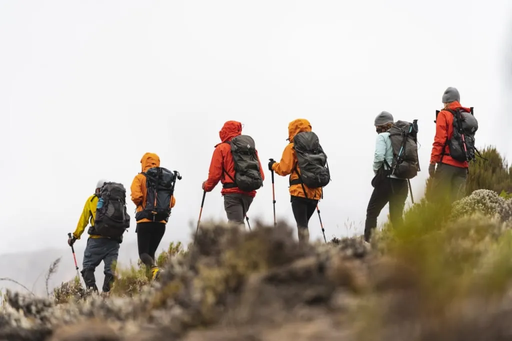
What are trekking poles?
Trekking poles are sports equipment used in hiking and mountaineering. They help to move over uneven terrain, especially when hiking in the mountains. Adventurers take poles with them when they go or hence the most common names for this type of equipment in English are trekking poles and hiking poles. However, these are the same, so we will use the first name.
Trekking poles are structurally different from ski poles and Nordic walking poles because they are used for different purposes. So you can't replace one type of pole with another. If you are planning to go trekking in the mountains, you should take trekking poles with you. Chances are you'll need them, and at some point, you'll thank yourself for taking them, even if you've never used them before.


Do you need trekking poles on all expeditions?
The community of trekking enthusiasts is divided into those who always use poles and are happy with the benefits, and those who do without them. And in the second group, some people have never really tried to walk with them, and others used them once or twice and gave up because the poles seemed inconvenient. There are also those who combine trekking with and without poles, depending on the conditions of the upcoming route. But the overall popularity of trekking poles has steadily increased over the years, and more and more people are taking poles with them into the mountains.
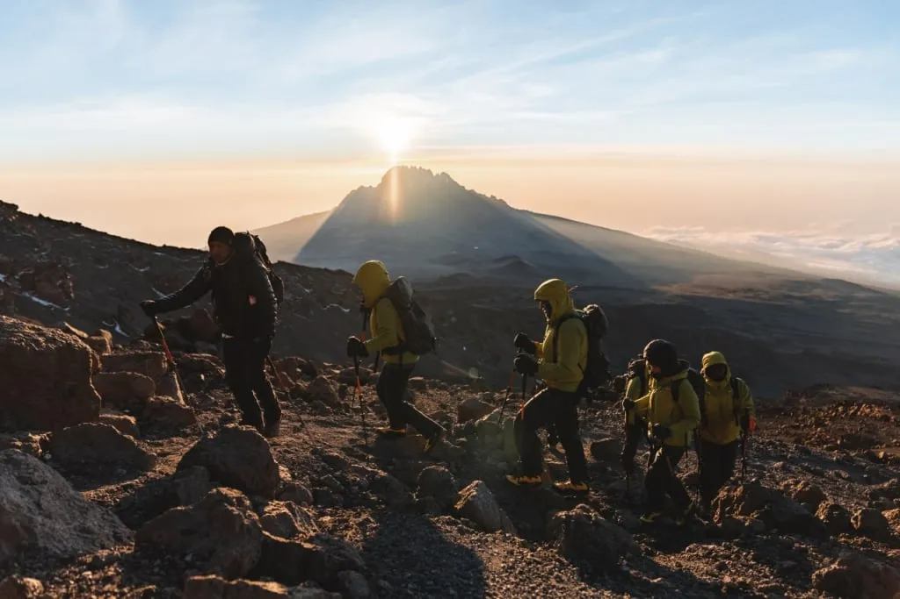
Arguments for using trekking poles
What are the benefits of trekking poles? The most common argument for using them is that poles redistribute the load while you walk, taking pressure off your knees. This is especially noticeable with a heavy backpack behind you. Of course, the extra support removes some of the load from the knees, but this is not even the only thing that makes trekking poles so popular during mountain expeditions.
Here are some advantages of using trekking poles:
- They provide two additional points of support, which is especially important on slippery surfaces such as wet mountain slopes after rain, and when one is tired and has less control over one's movements, putting one's legs at risk of injury;
- they fully redistribute the load to the muscles of your body, relieving the muscles and joints of the legs, transferring some of the tension to the arms, and engaging the upper body;
- they help maintain stability with a large and heavy backpack, especially on difficult sections such as steep ascents and descents where it's easy to lose your balance;
- on overgrown paths in the forest or when walking through tall grasses, they can be used to open up paths by pushing aside flora that gets in the way, especially nettles or thorny plants;
- poles can be used to safely check the depth of a stream or puddle on your way, as well as to see if a section of mud is passable and how firm the ice of a frozen stream is;
- in general, they help to keep a steady rhythm, which can be important on long hikes.

There are additional ways to use trekking poles too. Sometimes trekkers take ultralight tents with them, which are needed to get some rest and shelter from the sun. Such a tent can be set up using trekking poles as props, which eliminates the need to carry tent poles with you. Moreover, in your potential encounters with local wildlife, it is also more reassuring to have a trekking pole in your hand and hold it in front of you, than to face a wild animal with nothing in your hands. It won't help you against a bear, of course, but you can drive away a wolf or a dog.
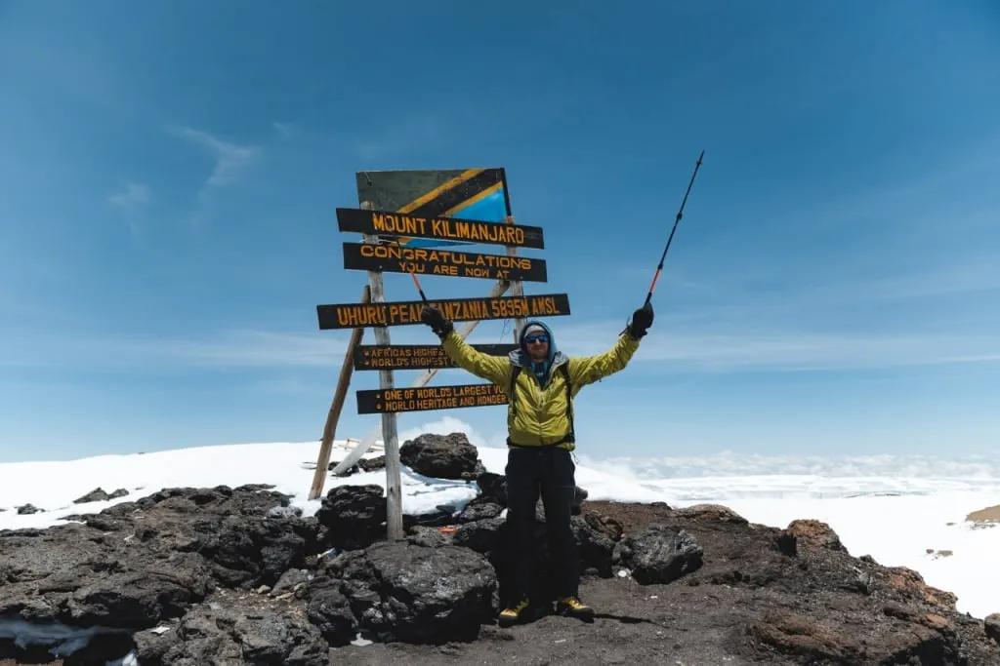
The first time you use them the poles may seem unnecessary, especially on a flat surface. But don't jump to conclusions and discard them right away. Fortunately, most trekking poles fold and can be stowed in your backpack. You can retrieve them on an uphill, on a rocky surface, and before an obstacle like a stream or a section of snow.
Arguments against using trekking poles
There are also fairly rational arguments for why poles can be unnecessary or even counterproductive.
Firstly, they're an extra weight, even if you carry them folded in your backpack. And when you're holding them on the go, your hands are always busy. If you need to urgently get your phone or camera, it can be a problem. For example, photographers and videographers are forced to go into the mountains without trekking poles to do their work successfully.
Secondly, they can throw some people off their trekking rhythm, because placing the poles right is a matter of practice, which not everyone has the patience for. This conclusion is usually made in the first minutes of use. But it is still worth spending a couple of days to get used to them.

Thirdly, there is the argument that trekking poles are bad for the environment. They stick their sharp tips into the ground and plants, damaging the ecosystem and leaving marks. They may also leave scratches on rocks and, if handled carelessly, on trees. This may not be a big deal after just one person, but when we're talking about constant streams of tourists, it's harder to argue with this argument. On the other hand, rubber caps can help to minimize the impact on the environment.
Finally, not everyone notices that poles help them relieve their knees and other joints. Some even claim that the constant use of poles constrains their movements and prevents some muscle groups from being fully engaged.
It might seem rational that the constant use of poles throughout a trek can indeed be uncomfortable. However, you definitely can consider using the poles on the climbs and descents, on slippery surfaces like wet rocks, ground with puddles, and snow. As well as when carrying a heavy backpack or experiencing pain in your joints during long hikes.
Sometimes it is a good idea to purposefully avoid the use of trekking poles on certain sections of the trail, for example during very steep descents. In such cases, it is safer to crouch down with your hands on the rocks than to bend down and look for a place to lean on while balancing on a narrow ledge. Each such section of the mountain trek should be evaluated on the basis of specific circumstances and intuitive judgments.
You can alternate between using poles and trekking without them, depending on the terrain and on how you feel. But it's important to have poles with you so that you don't find yourself in a helpless position when they can really serve you well.
Do you need trekking poles on an expedition to Kilimanjaro?
Climbing Kilimanjaro is an example of classic mountain trekking. All routes to the top pass through several climatic zones, among which there is a rocky wasteland and an Arctic zone, where ice and sometimes snow are added to the rocks. You will also encounter relatively steep climbs, which are easier to overcome with trekking poles. If you are “lucky” enough to get rained on during the expedition, it is better to use poles to be on the safe side as well.
One of the most popular routes - Lemosho- begins on the Shira plateau. The plateau is flat and easy, so you won't need poles there. However, after a day or two, you'll be grateful to the manager who insisted that you need to take the trekking poles and to the guide who reminded you of them.
We have worked on Kilimanjaro for many years, and know from experience that the poles will help and are sometimes indispensable, especially on the summit and on the way back down. Do not ignore the recommendation to take them on an expedition to the highest peak in Africa.
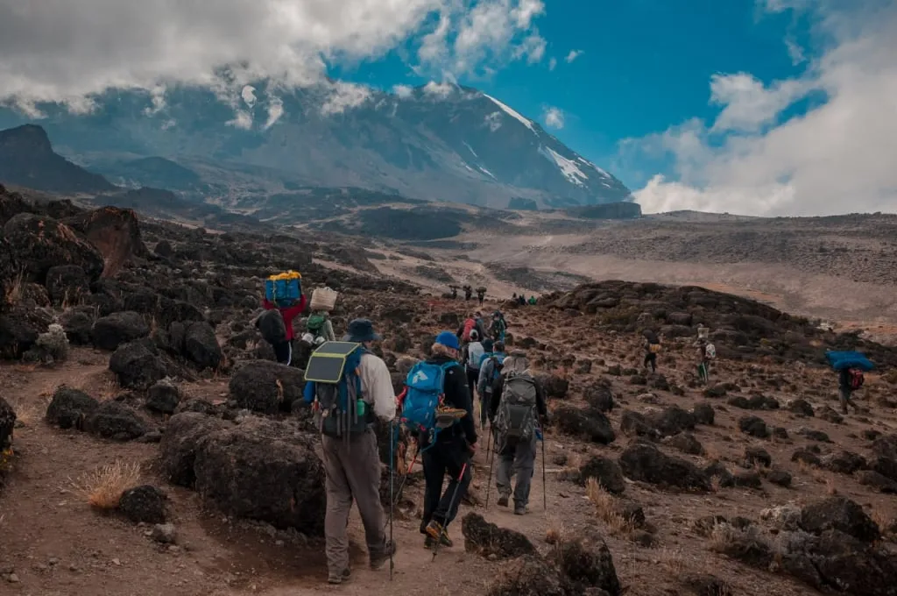
At Angelino Adventures we use modern equipment - professional trekking poles from Black Diamond. They have proven to be reliable and comfortable. Before the expedition to Kilimanjaro we give them to all participants who don't have their own. The poles are among the mandatory equipment.
How to choose the right trekking poles for you?
Now let's take a closer look at trekking poles. What are they made of, what is their design, what elements are important, and what are the differences between them? Keep reading and you’ll find out how to choose the best poles for yourself.
Trekking pole materials
The main tubes of trekking poles are typically made of one of the two materials:
- aluminum;
- carbon fiber.
The first option is very light but at the same time durable and tough. Such poles are not afraid of accidental bumps. Sometimes other materials are added to aluminum, such as titanium. Trekking poles made of carbon fiber are lighter than aluminum ones, and this material is often used in high-end models, as well as in special poles for women and children. Another advantage is that they reduce the vibration you feel when you plant the pole on a hard surface. However, carbon fiber is not as resistant to impact, which means the pole can be damaged if handled carelessly. In addition, poles made of carbon fiber are noticeably more expensive.
Perhaps, beginners should opt for aluminum poles because of their practicality and cheapness. In the future, if you decide to hike more often or challenge yourself on more difficult trekking routes, it is worth considering buying a pair of carbon fiber poles. We at Angelino Adventures use carbon poles and recommend them to anyone who is seriously into mountain trekking.
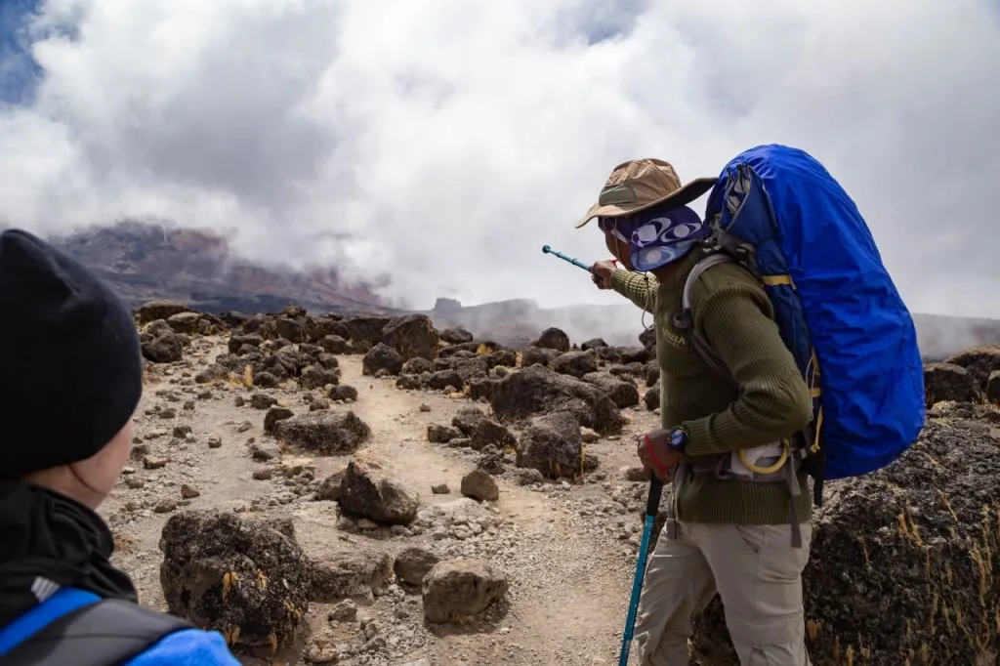
Grips
Trekking pole handles or grips are typically made of one of these four materials:
- plastic;
- rubber;
- cork;
- EVA (EVA foam, ethylene-vinyl acetate).
Plastic grips are by far the most uncomfortable and even damaging. Such grips are slippery, can give you calluses, and with prolonged use, you will get tired and uncomfortable more quickly. Plastic is used only in the handles of the cheapest models of trekking poles, so this is a sign to avoid. Overall, this is the worst option and so we skip it right away.
A rubber grip is soft and comfortable. Its main advantage is that it stays warm even in cold weather. But it can also chafe your hands during long crossings and if your hands get sweaty. While rubber is a reasonable option, cork and EVA grips are still better.
Cork grips and foam grips are the most comfortable. Both materials absorb moisture from sweaty hands. It feels good to squeeze them in the palms of your hands: after a gentle squeeze, they quickly return to their original shape. Such grips are also excellent at absorbing vibration. We recommend choosing poles with cork or polymer (EVA) grips.
Almost all grips are equipped with wrist straps. We will tell you more details about them later in this article because not everyone uses them correctly.
It is also convenient when there is an extra area below the handle with a soft coating. In fact, that is an extended version of the handle. You can grasp this part when you climb up and put the pole in front of you on higher ground. This allows you to avoid adjusting the length of the pole.
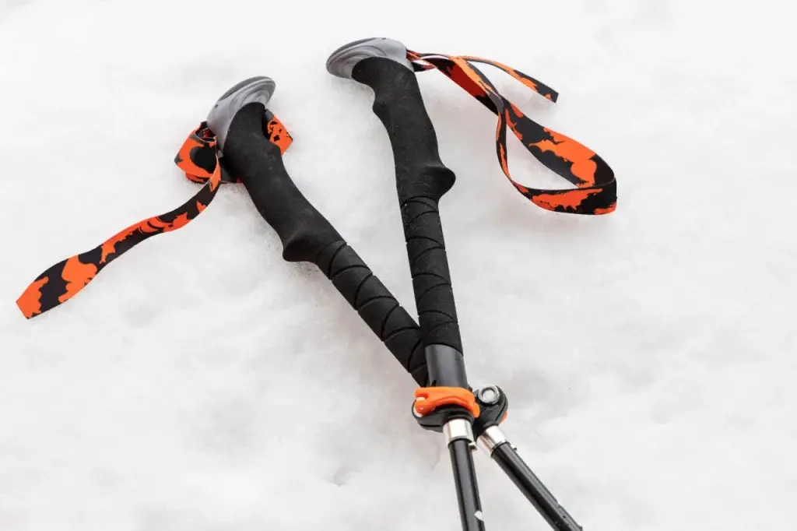
Trekking pole design
To wrap up the conversation about the grips, let's say that if possible, you should choose grips that are slightly curved or, rather, slightly set back. This 15-degree tilt creates a feeling of comfort in the wrist - this position of the handle is natural for a comfortable grip. So remember this detail and try to find trekking poles with ergonomic grips.
Speaking about the design of the poles themselves, let us mention that they can be adjustable and non-adjustable. The second option implies a one-piece tube, so choosing the right length is critical. The advantages of non-adjustable poles include their weight - lighter than adjustable poles. The disadvantages, respectively, are the inability to change the length and the inconvenience of transportation. One-piece poles require more space, do not fit in a suitcase, and not all airlines are willing to take them on board.
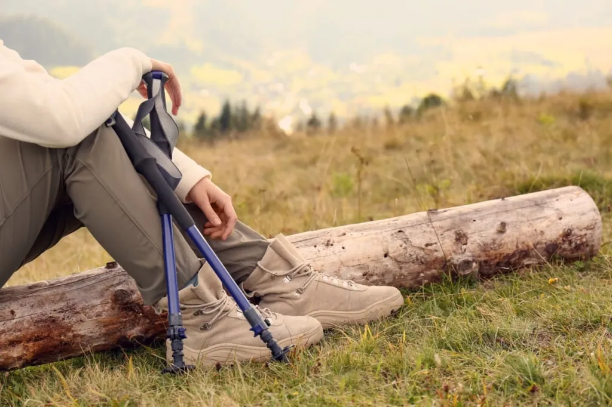
Length-adjustable poles extend like a telescopic rod. Folding poles are collapsible, and can be divided into 2, 3, or 4 sections. They are usually a bit heavier due to the additional elements, but extendable and folding poles can often be put in a suitcase or a backpack. Backpacks for experienced travelers allow you to secure the folded poles outside. You can quickly grab them when it is necessary to go through a difficult section of the trek, and when that section is over, simply attach them back to your backpack. We consider this option ideal for tracks of light to medium difficulty. Over time you will appreciate all the advantages of trekking pole design.
There are also shock-absorbing poles with springs inside. They can be turned on and off as needed. Such poles absorb much of the shock and vibration of walking. This is especially useful for those who have joint problems due to elbow or wrist pain with increased exertion. And in general, when walking with poles for a long time is better to reduce the shock effect. We recommend choosing trekking poles with an anti-shock system.
Some models of poles are also equipped with a camera mount, which allows you to use them as a monopod or a tripod.
At the bottom of the pole, there is a tip and a ring (called a basket) over it. The tip is needed to provide good traction, even on rocky ground and ice. It is made of steel or hard alloys. Usually, the tips are very strong and wear-resistant. The trekking pole kit comes with some extra tip options like rubber caps. Experienced trekking fans buy additional tips specialized for different terrain too. They are convenient to use during storage and transportation of the poles, as well as in hiking - each tip has a type of surface it will perform the best on.
At the same time, it is important to remember to remove the caps before trekking in rocky terrain and in difficult weather conditions. Their absence ensures that the sharp tips will keep the poles from shifting on rocks or slippery ground. However, some mountaineers recommend using rubber tips on rocky ground, so this is a matter of preference and the tips may be swapped to fit the specific conditions of the route. But if you're hiking in the woods, for example, it's certainly best to leave the rubber tips on to reduce the impact on the environment.
The rings or baskets over the tips are similar to those found on ski poles and can be of various diameters. They protect the poles from falling through the snow, and the bigger they are, the better they can brake. Some people also put them on before moving through the mud.
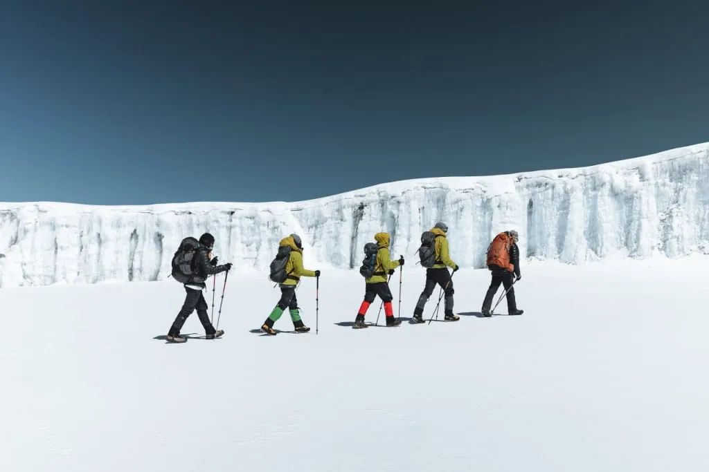
How to adjust the poles for optimal fit?
When your trekking poles are chosen, it remains to adjust their height so that you are comfortable and they do their job properly. If you are choosing non-adjustable poles, this is the most important parameter, and so it’s important to select the right size.
In sports equipment stores you can find tables that list the length of the poles against your height. But there is another very simple way to find the choose right length.
There is just one rule: when you place the pole vertically on the ground and hold it by the grip, your arm should be bent at the elbow at exactly 90 degrees. Use a mirror to make sure you're holding your arm at a right angle.
A brief video tutorial on adjusting pole lengths by Black Diamond equipment manufacturers
When changing the length of your poles while trekking, focus on the same rule each time, it takes a few seconds. However, in some cases, you’ll want to step away from this rule. Below we will discuss why and when to change the length of the poles.
How to use trekking poles properly?
Many people who have never walked with poles before intuitively understand how to use them in the first minutes or hours. There is nothing complicated about it. But for some people, it may take a few days before the interaction with the poles goes into "autopilot" mode.
Before your first long trek, practice walking with trekking poles around the house. If you don't have poles and plan to rent them locally, try to find long sticks or something similar, at least a mop handle. Practicing proper pole placements and different types of grip will be helpful.
Right pole with the left foot, left pole with the right foot
The basic rule when walking with poles is that the opposite arms and legs work in pairs. The right leg is helped by the pole in the left hand and the left leg by the pole in the right hand. You start slowly, and then when the hands start to coordinate with the feet, the rhythm will naturally speed up.

It can be difficult to keep this rotation at first, and inexperienced people get confused. If this happens, mentally imagine a letter X in front of you, which you kind of push forward. First one of its slanted sticks, then the other. The goal is to push the letter X in front of you until you forget about it and it starts to happen by itself.
This principle of crossing the opposite arm and leg works on flat terrain as well as on inclines. But if sometimes you want to plant both poles into the ground at the same time, you can move this way as well. This technique provides more stability and can be justified on ascents and descents.
How to plant the poles correctly?
The best way to place the pole is to hold it in front of you and lean it slightly forward, resting the tip a few centimeters behind your working leg. As you step with your right foot, your left hand simultaneously places the leaning-forward pole behind your right heel.
As you lean the pole forward, you'll see why a soft handle is nicer than a hard plastic grip - it won't dig into the palm of your hand. Owners of ergonomic grips will appreciate the 15-degree inclination of the handle too.
Again, you can practice in front of a mirror at home. But it is easier to listen to the feelings of your body. When the poles are set correctly, you push them off the ground as if you were rowing with the oars in a boat. You move by pushing your body forward with the poles. It's much easier to walk this way than putting the poles in front of you and pulling your body toward them.
The poles are placed on the sides at such a distance from the body as is natural for the position of the arms. But if you run into a rock or slip, it's better to spread the poles wider to help you with the balance.
How to comfortably grip the poles?
A basic grip that is appropriate for flat terrain is when both poles are held by the grips. This is the standard grip. And there are also lower and upper grips. They help compensate for the difference in height between the point where you are standing and the next point above or below where you put the poles and where you will end up at the next step.
How to climb with the poles
It’s much harder to push yourself up on an ascent, so you have to pull the body up towards the poles. Place the poles higher in front of you, and when you feel that you have firmly planted them on the ground, take a step up, leaning on them. The body should lean forward, especially if you have a heavy backpack on your back. In this position, the lower grip is used - grab the lowest part of the grips or even lower. It is for this use that manufacturers make a soft coating under the handle, so that the hand does not slip on the smooth pole.
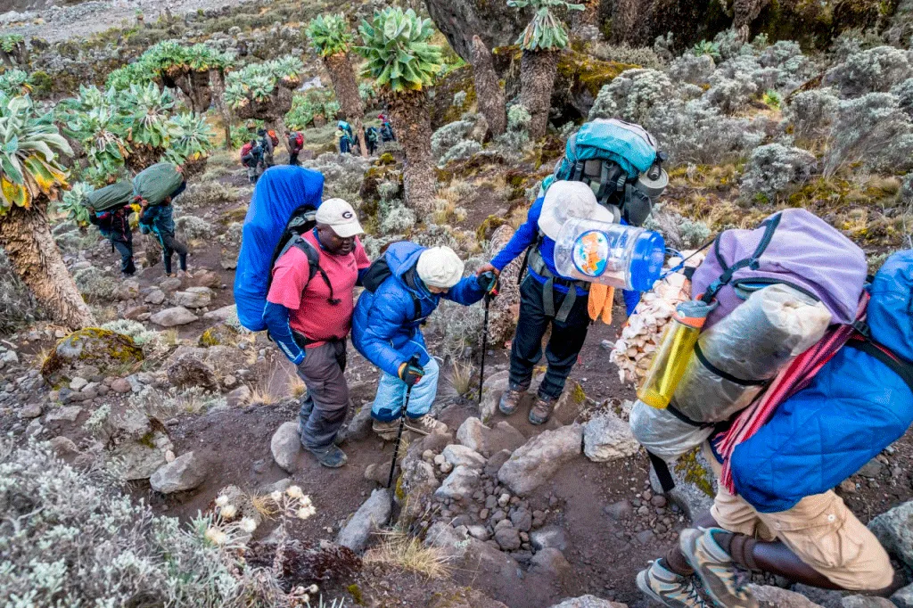
If the climb is long, it makes sense to shorten the poles, if possible. This is where adjustable models win out over fixed ones. When changing their length, you should use the same rule - when you place the pole above the level of your feet, ideally you should keep a 90-degree angle between the shoulder and the forearm.
If the climbing section is too steep, it is better to refrain from using trekking poles and instead climb by grasping stones and ledges with your hands.
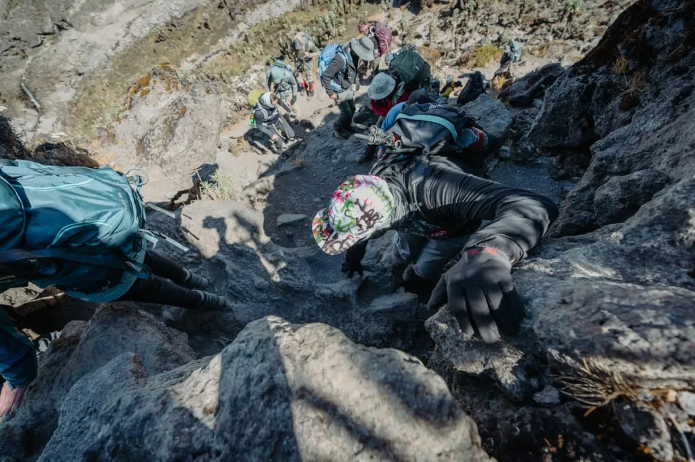
How to go downhill with trekking poles?
On a descent, we can't push ourselves forward either. Here it's logical to move by leaning your body and backing yourself up with the poles out in front. The poles will be lower, so we will use the upper grip. Handles with rounded upper parts would be especially comfortable here - they allow you to naturally rest your palm and wrap all the fingers around the grip.
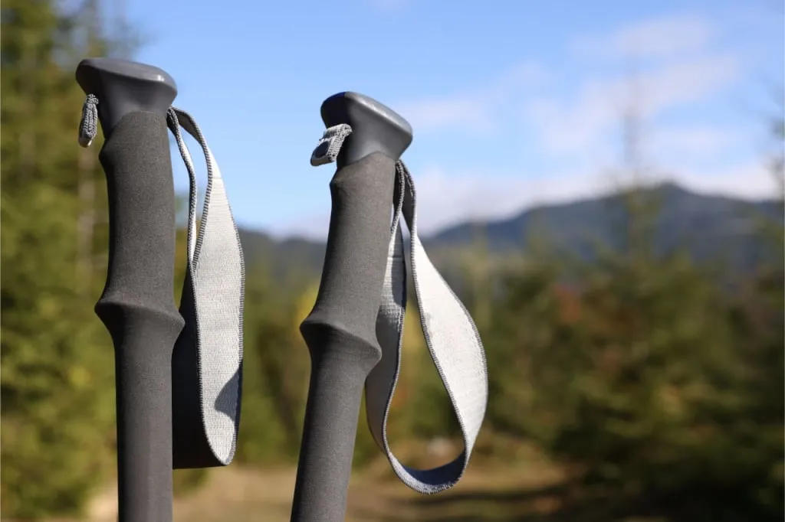
Adjustable poles on can be fully extended on long descents. In contrast to ascents, descents are always best tackled by helping yourself with the poles. The exception to this is the steepest sections where it's easier to crawl down.
How to pass traverses with trekking poles?
A protracted requires a variety of grip positions. Many traverse routes do not go directly to the top but guide you along the slope. On long sections in one direction, the pole that is placed lower is taken with the upper grip, and the one that is placed higher is taken with the lower grip. It also makes sense to adjust the length of the poles to the standard grip. Of course, there is no sense to bother with the change of the pole length if you are on a loop trail and the horizontal direction of your movement alternates from the left to the right or vice versa. In that case, it's easier to just use the upper and the lower grips.
How to use the wrist strap?
Almost all models of trekking poles have a loop on the top of the handle, which is called a hand strap or a wrist strap. Here are a few tips about how to use them:
First, the strap is adjustable in length, and that's the next thing to do after adjusting the length of the pole itself.
Secondly, the strap has to be put on correctly: you put your hand through the loop from below, take the grip, and lower your hand so that your wrist rests on the strap and relaxes a little. Now your hand will not be so tired while walking, because there is no need to hold the pole, grasping it as hard as you can. Let the grip "relax" in your hand a little - the pole is not going anywhere, it is fixed on the hand by the strap.
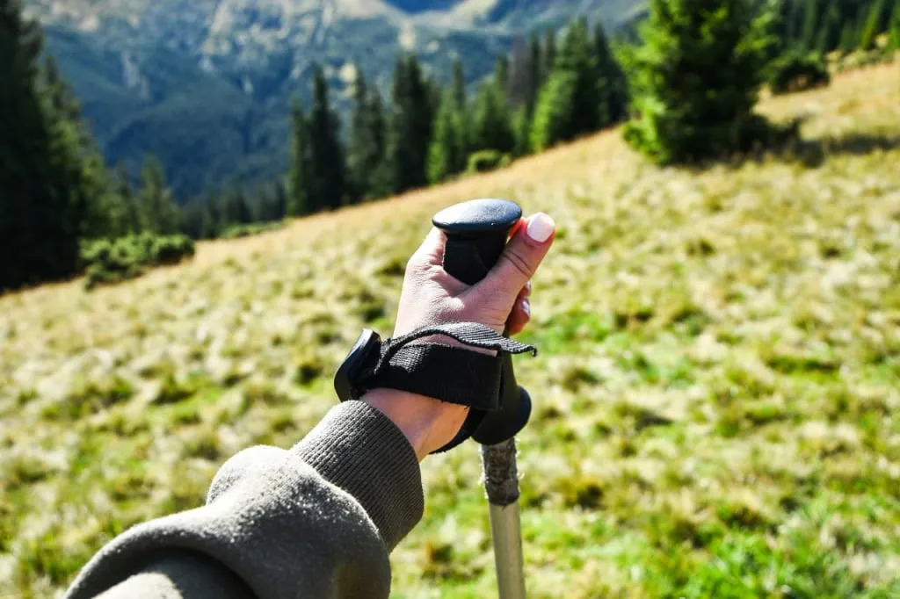
Good manufacturers have straps that are soft, anatomically shaped, and comfortable. Ideally, they even have a lining that wraps the wrist and prevents chafing.
Here’s another tip that is important to remember as you are getting used to the presence of trekking poles. When you're in a difficult area where it's easy to lose your balance and there's a high chance of slipping or falling, take your hands out of the straps so they don't block the arms you intuitively set up when you fall. It's better to fall softly, quickly letting the poles out of your hands than to hold the poles until the last moment, risking injury. Keep this in mind on the descents.
Storage, care, and transportation
It is recommended to store trekking poles unassembled and in a case. The main condition that is good for them is dryness. After returning from trekking, the poles should be disassembled, cleaned, and dried. After that, pack them in a cover and put them in a dry place.
All locking mechanisms can be lubricated to prolong their service life. Be sure to check all latches, locks, and buttons before your next use. They should be 100% reliable.
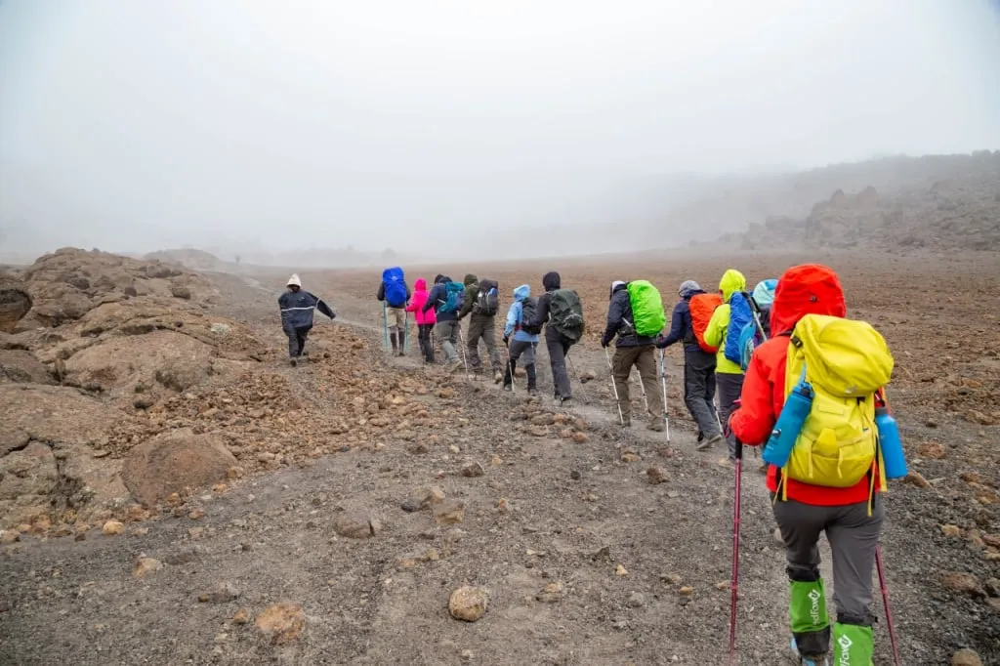
Transportability depends on the model. With folding and collapsible poles it is easiest - when folded, their length is 40-70 centimeters (15.7 - 27.5 inches) on average. They are easy to put in the luggage when flying, and on the trek they can be attached to the backpack. Remember to ask the airline about the possibility of transporting unfolded and unassembled poles in advance.
All content on Angelino Adventures is created with expert insights and thorough research, in line with our Editorial Policy.


Want to know more about Tanzania adventures?
Get in touch with our team! We've explored all the top destinations across Tanzania. Our Kilimanjaro-based adventure consultants are ready to share tips and help you plan your unforgettable journey.
 Tanzania Safaris
Tanzania Safaris
 Kilimanjaro and other mountains
Kilimanjaro and other mountains
 About Angelino Adventures
About Angelino Adventures
 Tanzania Islands
Tanzania Islands